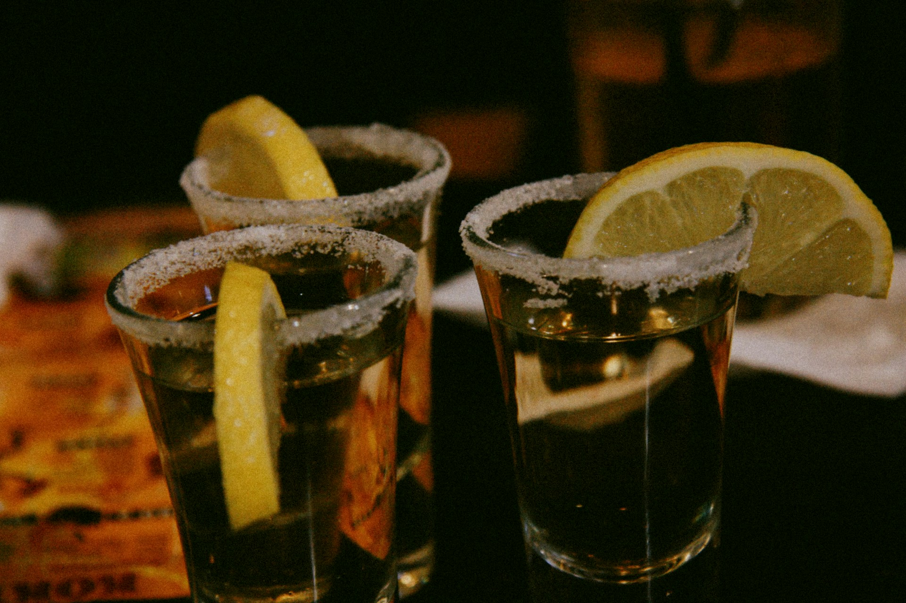

Cocktail
A cocktail is an alcoholic mixed drink. Most commonly, a cocktail is a combination of one or more spirits mixed with other ingredients, such as juices, flavored syrups, tonic water, shrubs, and bitters. Cocktails vary widely across regions of the world, and many websites publish both original recipes and their own interpretations of older and more famous cocktails.

Tequila
Tequila is a distilled beverage made from the blue agave plant, primarily in the area surrounding the city of Tequila 65 km (40 mi) northwest of Guadalajara, and in the Jaliscan Highlands (Los Altos de Jalisco) of the central western Mexican state of Jalisco.
